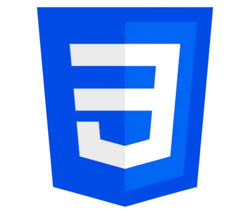

Bienvenidos a Mi Portfolio
Sobre mi..

Soy Juan Orrico, tengo 31 años y estoy iniciando mi camino en el desarrollo web en la UTN. Tengo un buen manejo de
HTML y CSS, y ahora estoy explorando JavaScript y React. Me encanta aprender y cada nuevo proyecto es una
oportunidad para crecer y experimentar con ideas frescas.
Además de mis estudios, disfruto resolver problemas y
encontrar soluciones creativas. Me motiva la idea de poder crear sitios web que no solo sean funcionales, sino
también atractivos y accesibles. En mi tiempo libre, me gusta investigar nuevas tecnologías y tendencias en el
desarrollo web, siempre buscando inspiración para mis próximos proyectos. Estoy emocionado por ver hasta dónde
puedo llegar en este mundo digital.
A medida que vaya progresando en el estudio ire actualizando el portfolio...
Conocimientos
HTML
Tengo un buen manejo de HTML, lo que me permite crear estructuras sólidas para páginas web. Sé cómo usar etiquetas, atributos y elementos para organizar contenido de manera efectiva. Además, comprendo la importancia de la semántica en HTML, lo que ayuda a mejorar la accesibilidad y el SEO de los sitios.
CSS
Tengo un buen manejo de CSS, lo que me permite transformar la apariencia de mis páginas web. Sé cómo aplicar estilos para mejorar la estética, desde colores y tipografías hasta bordes y sombras. Estoy aprendiendo a utilizar técnicas avanzadas como flexbox y grid para crear diseños responsivos que se adapten a diferentes dispositivos. Me gusta experimentar con animaciones y transiciones para dar vida a mis proyectos, siempre buscando un equilibrio entre funcionalidad y estilo.
Javascript

Estoy comenzando a aprender JavaScript, así que todavía tengo mucho por descubrir. Actualmente, estoy familiarizándome con los conceptos básicos, como variables, funciones y estructuras de control. Me interesa entender cómo puedo agregar interactividad a mis proyectos web y hacer que cobren vida. Aunque todavía estoy en las etapas iniciales, estoy motivado para seguir aprendiendo y desarrollar mis habilidades en este lenguaje esencial para el desarrollo web.
React
Estoy dando mis primeros pasos en el aprendizaje de React, así que todavía no tengo claro todo lo que implica. Sé que es una herramienta popular para crear interfaces de usuario y que puede hacer que el desarrollo sea más eficiente, pero aún tengo mucho que descubrir. Me intriga la idea de poder construir aplicaciones web más interactivas y organizadas. Aunque estoy en el principio del camino, estoy entusiasmado por lo que aprenderé y cómo puedo aplicarlo en mis proyectos futuros.